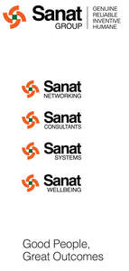

Trade Mark Journal No.2025/030 25 July 2025
UK00004234048 15 July 2025 (35)

- Class 35
- Marketing consulting; Management consulting; Marketing consultancy; Business organisation and management consulting; Professional business consulting; Business consulting; Business management and consulting; Business management consulting; Business organisation consulting; Consultancy (Professional business -); Professional business consultancy; Business consultancy (Professional -); Business research consulting; Business organization and management consulting; Personnel management consulting; Corporate management consultancy; Business organization consulting; Business management and consultancy; Business management consultancy; Career planning consultancy; Business management consultancy and advisory services; Consultancy and advisory services for business management; Business management and organization consultancy; Business management consultancy in the field of executive and leadership development; Business management and organisation consultancy; Business management organisation consultancy; Business organisation and management consultancy; Business consultancy; Professional consultancy relating to marketing; Business organisation and management consulting services; Personnel consultancy; Business marketing consultancy; Business planning consultancy; Management consultancy (Personnel -); Personnel management consultancy; Business consultancy and advisory services; Business advisory and consultancy services; Consultancy and advisory services in the field of business strategy; Direct marketing consulting; Business organization consultancy; Recruitment consultancy for lawyers; Consulting services in business organization and management; Business process management and consulting; Business appraisal consultancy; Business management and consulting services; Business management consulting services; Business recruitment consultancy; Business marketing consulting services; Professional consultancy relating to business management; Corporate management consultancy services; Strategic business consultancy; Business organisation consultancy; Business relocation consulting; Assistance, advisory services and consultancy with regard to business management; Professional business consultancy services; Business management and organization consultancy services; Business management and organisation consultancy services; Management consultancy services; Business process management consultancy; Personnel management and employment consultancy; Assistance, advisory services and consultancy with regard to business planning; Assistance, advisory services and consultancy with regard to business organization; Business consulting services; Professional consultancy relating to personnel management; Consultancy regarding the organization or managing of a trade company; Business management consultancy services; Business management and consultancy services; Business administration consultancy; Consultancy and advisory services relating to business management; Consultancy services in the field of affiliate marketing; Staff recruitment consultancy services; Employment consultancy; Business management consultancy in the field of corporate travel; Business organisation and management consultancy in the field of personnel management; Assistance and consultancy relating to business management and organisation; Advertising, marketing and promotional consultancy, advisory and assistance services; Business organization and management consultancy including personnel management; Personal management consultancy services; Business management consultancy, also via the Internet; Business consultancy to firms; Personnel management consultancy services; Business management and consultation; Advertising and marketing consultancy; Business management consultation; Consultancy of personnel recruitment; Personnel recruitment consultancy; Assistance, advisory services and consultancy with regard to business analysis; Business management and enterprise organization consultancy; Consultancy relating to business management and organisation; Consultancy and advisory services relating to personnel management; Recruitment consultancy for legal secretaries; Marketing management advice; Consultancy relating to business management; Commercial consultancy; Risk management consultancy [business]; Business networking; Business networking services; Career networking services; Online business networking services; On-line advertising on computer communication networks; Business information services provided online from a global computer network or the internet; Providing marketing consulting in the field of social media; Online advertising via a computer communications network; On-line promotion of computer networks and websites; Providing business information in the field of social media; Provision of business information via global computer networks; Providing business information directory services, via a global computer network; On-line advertising via a computer communications network; Providing business directory information via a global computer network; Compilation of directories for publishing on global computer networks or the internet; Promoting the goods and services of others via computer and communication networks; Online advertising network matching services for connecting advertisers to websites; Online advertising on a computer network; Online advertising on computer networks; Providing recruitment information via a global computer network; Retail services via global computer networks related to beer; Presentation of companies on the Internet and other media; On-line advertising on a computer network; Dissemination of advertising for others via an on-line communications network on the internet; On-line advertising on computer networks; Providing employment information via a global computer network; Provision of advertising space on a global computer network; Dissemination of advertising via online communications networks; Business management of sporting clubs; Book club services retailing books to its members; Advice relating to the business management of fitness clubs; Advice relating to the business operation of fitness clubs; Promotion of sports competitions and events; Retail services in relation to information technology equipment; Business management consulting services in the field of information technology; Wholesale services in relation to information technology equipment; Business consultancy relating to the administration of information technology; Management of health care clinics for others; Health care cost management; Administrative management of health care clinics; Health care cost review; Compilation of statistics relating to health care utilization; Advice relating to the business management of health clubs; Administrative services relating to dental health insurance; Retail services in relation to dairy products; Retail services in relation to pet products; Commercial information and advice services for consumers in the field of beauty products; Advertising services relating to pharmaceutical products; Commercial information and advice services for consumers in the field of cosmetic products; Online retail store services relating to cosmetic and beauty products; Wholesale services in relation to dairy products; Providing consumer product information relating to food or drink products; Retail services in relation to hair products; Advertising relating to pharmaceutical products and in-vivo imaging products; Retail services in relation to gardening products; Retail services relating to horticultural products; Commercial information and advice services for consumers in the field of make-up products; Retail services relating to delicatessen products; Retail services in relation to horticulture products; Retail services relating to bakery products; Wholesale services in relation to horticulture products; Marketing research in the fields of cosmetics, perfumery and beauty products; Retail services in relation to bakery products; Retail services for pharmaceutical, veterinary and sanitary preparations and medical supplies; Retail services in relation to beauty implements for animals; Retail services in relation to beauty implements for humans; Commercial information and advice for consumers in the choice of products and services; Retail services in relation to hygienic implements for animals; Promotion of goods and services for others; Providing consumer product advice relating to cosmetics; Retail services in relation to chemicals for use in agriculture; Advertising services relating to the commercialization of new products; Providing market information in relation to consumer products; Retail services in relation to hygienic implements for humans; Retail services in relation to dietary supplements; Retail services in relation to chemicals for use in horticulture; Providing commercial information and advice for consumers in the choice of products and services; Providing consumer product information relating to cosmetics; Providing advice relating to the marketing of chemical products; Advertising services relating to in vivo imaging products; Promoting the goods and services of others.
Sanat Group UK Ltd